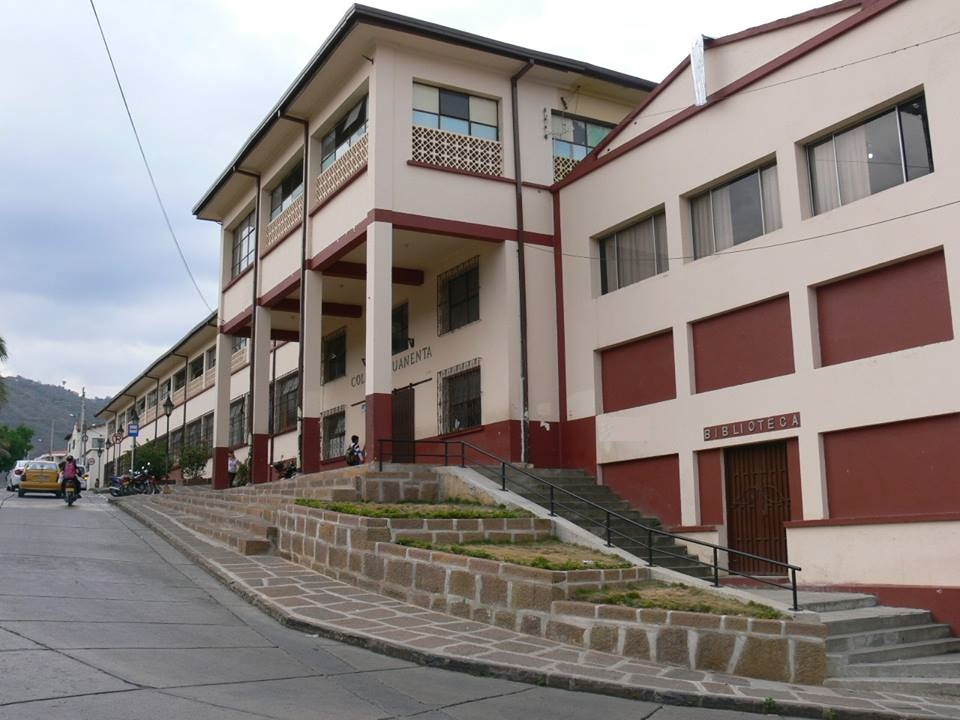
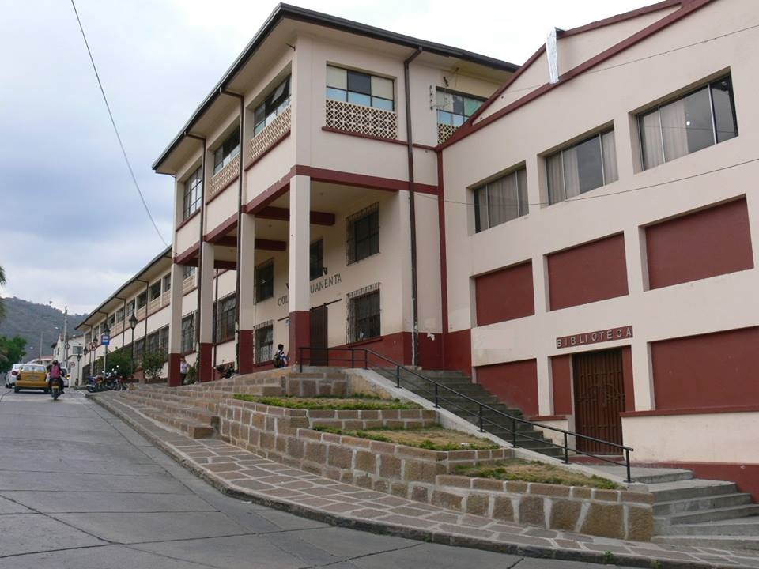

Colegio San José de Guanentá
El Colegio San José de Guanentá es una institución educativa de carácter oficial, ubicado en el municipio de San Gil – Santander, perteneciente a la Asociación Nacional de Colegios Santanderinos. Ofrece formación desde el nivel preescolar hasta el de media técnica, contando con las
especialidades de Dibujo Técnico, Diseño Industrial, Electricidad, Electrónica, Mecánica Industrial, Metalistería y Sistemas.
En coherencia con su misión institucional, sus procesos pedagógicos están orientados hacia la formación integral de los niños y jóvenes, de tal forma que se conviertan en personas capacitadas y comprometidas con
la transformación en los ámbitos personal, familiar, comunitario y social.

